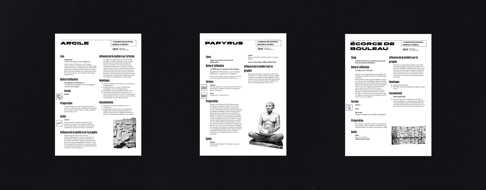
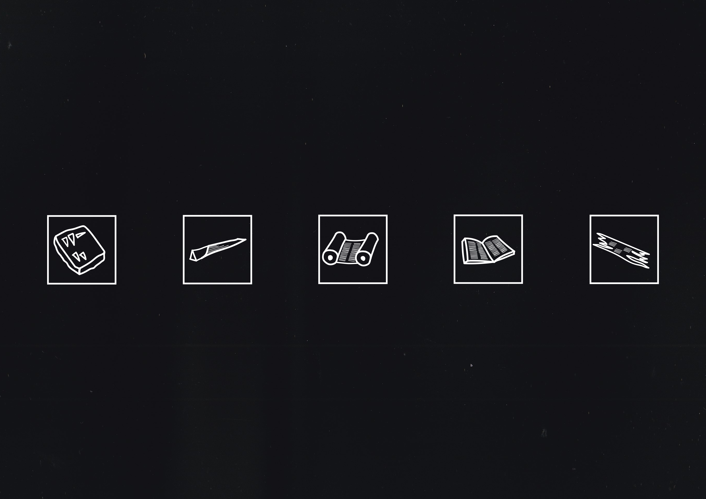
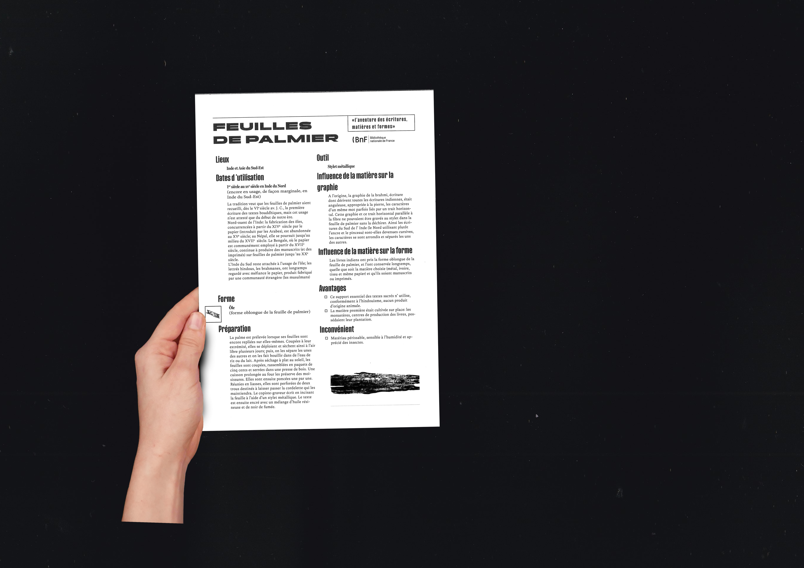

Fiches bnf
← retour
Travail de mise en page pour les ches pédagogiques “L’aventure des écritures, matières et formes” de la Bibliothèque Nationale de France.
Pour ces ches, le travail s’est principalement concentré sur le choix typographique, la création de pictogrammes et la construction d’une hiérarchie cohérente.
  